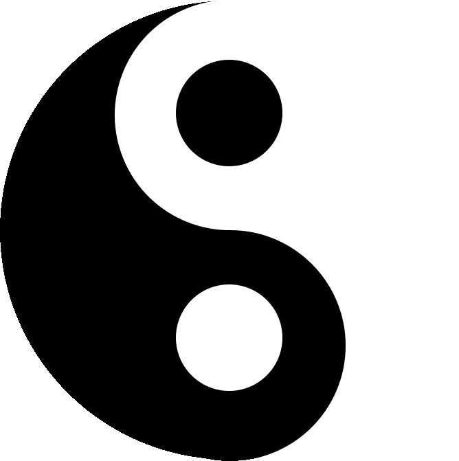

Fortune Telling
Select Birth Hour
Zi (11:00 PM - 1:00 AM, GMT)
Chou (1:00 AM - 3:00 AM, GMT)
Yin (3:00 AM - 5:00 AM, GMT)
Mao (5:00 AM - 7:00 AM, GMT)
Chen (7:00 AM - 9:00 AM, GMT)
Si (9:00 AM - 11:00 AM, GMT)
Wu (11:00 AM - 1:00 PM, GMT)
Wei (1:00 PM - 3:00 PM, GMT)
Shen (3:00 PM - 5:00 PM, GMT)
You (5:00 PM - 7:00 PM, GMT)
Xu (7:00 PM - 9:00 PM, GMT)
Hai (9:00 PM - 11:00 PM, GMT)
Start Divination
